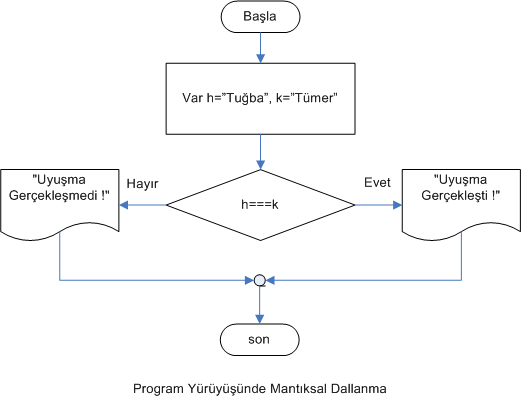

JavaScript Temelleri
Bölüm 2
Temel Bilgiler
2.12 - Program Akışının Yön Değiştirmesi
Bölüm 2 Sayfa 14
2.12.1 - Dallanma
JavaScript programlama dilinde programlar yukarıdan aşağıya doğru, çalıştırılabilecek bildirimler çalıştırılarak devam eder. Program akışı sadece mantıksal iafadelerle değiştirilebilir. Program akkışışının değişmesine dallanma adı verilir.
Programların mantıksal olarak dallanması, yazılmış olan programların ileride yeniden incelemelerinde büyük kolaylık ve anlaşılırlık kazandırır. Bunun için ödenmesi gereken bedel ise, mantıksal olarak dallannan programların yazımının daha zor olması, dolayısı ile daha çok zaman alması ve daha fazla emeğe gereksinme duyulmasıdır. Mantıksal dallanmayı sağlayan bildirimlerin en sık kulanılanı, if/else bildirimleridir.
2.12.2 - if..else Bildirimi
if..else Bildirimi, aşağıda görüldüğü gibi uygulanır:
if (mantıksal koşul gerçekleşirse ) { bildirim 1; bildirim 2; ... bildirim n; } [else { bildirim 1; bildirim 2; ... bildirim n; } ]
Burada,
mantıksal koşul : Mantıksal bir ifade. Bu ifadenin sonucunun null veya undefined olması, koşulun gerçekleşmemiş olması, yani sonucun false olması anlamına gelir (Gerekli).
bildirim1 : koşulun gerçekleşmesi durumunda çalıştırılacak ifade. Bir bileşik mantıksal ifade de olabilir (Gerekli).
bildirim2 : koşulun gerçekleşmemesi durumunda çalıştırılacak ifade. Bir bileşik mantıksal ifade de olabilir (İsteğe Bağlı).
Bu deyimlerde, en karmaşık mantıksal ifadeler kullanılabilir. Burada tek dikkat edilecek konu, ifadelerin net olması, ve sonucunun true veya false olarak değerlendirilebilmesidir.
Bir if ifadesi, sadece kendisinden sonra gelen ilk Bildirim bloğunu çalıştırabilir. Bildirim bloğunda en az bir bildirim bulunmalıdır. Koşul geçekleşir ve kontrol if bildiriminin sağındaki bildirim bloğuna geçerse, bloktaki tüm bildirimler çalıştırılır. Bildirimler tamamlandığında kontrol, bir sonraki (varsa) else bildiriminden bir sonraki bildirime geçer. İlişikli else bildirimi isteğer bağlıdır. Eğer if bildiriminin koşulu gerçekleşmezse, kontrol ilişikli else bilidiriminin sağındaki bildirim bloğuna geçer.
Her if ifadesine mutlaka bir else bildiriminin ilişkilendirilmesine gerek yoktur. Fakat bir else bildirimi varsa kontrol, ya if bildirimini izleyen, ya da else bildirimini izleyen bloğa girmek zorundadır. Eğer if bildirimini izleyen bir else bildirimi yoksa kontrol bir sonraki bildirime geçer.
Eğer if veya else bilidirimlerinin sağındaki bildirim bloklarında sadece bir tane bildirim bile bulunsa, kural olarak değil fakat iyi yazılım için son zamanlarda kabul edilen ortak yazılım kuralı olarak blok parantezlerinin kullanılması sağlık verilmektedir.
Her if... else mantıksal tümcesinin sadece bir tek bloğu çalıştırma hakkı bulunmaktadır. Yani mantıksal ifadenin gerçekleşmesine bağlı olarak, ya if ile belirtilen ifade (veya ifadeler bloğu) veya else ile belirtilen ifade (veya ifadeler bloğu) çalıştırılabilir. Ama, her ikisi birden asla çalıştırılamaz.
Her if (varsa) kendisinden sonra gelen en yakın else ile, her else kendisinden önce gelen en yakın if ile eşleşir. Örnek:
/* <![CDATA[ */ function eşleşme () { var k = 'Tuğba', h = 'Tümer'; if (h === k) { bilgiYaz('Uyuşma Gerçekleşti !', 'b2.12.2-uyg-1-sonuç-1'); } else { bilgiYaz('Uyuşma Gerçekleşmedi !', 'b2.12.2-uyg-1-sonuç-1'); } sayfaYüklendiktenSonraÇalıştır(eşleşme); /* ]]> */
Bu programın sonucu:
Bu programın akım şeması, programlarda mantıksal akış kontrolüne örnek oluşturacaktır :

Akım şemasında, programın seçim aşamasında iki yöne doğru dallandığı görülmektedir. Eğer seçim koşulu gerçekleşirse, program akışı, if ile belirtilen yöne doğru, yoksa else ile belirtilen yöne doğru devam edecektir.
JavaScript program kodları yazılırken,if...else yapılanmalarında, hangi else'in hangi if'e ait olduğu ilk bakışta anlaşılacak şekilde düzenlenmelidir. Yukarıdaki örnekte verilen yazılım model olarak alınmalıdır. Bu şekilde, son else bildiriminin son if bildirimi ile ilgili olduğu açıkça görülmektedir.
Programın koşullu dallanmasının başarısı, sınama grubunun tutarlığına bağlıdır. Tutarsız sonuç verecek bir sınama grubunun tasarımı, programın koşullu dallanmasındaki tutarlılığı da daha baştan olumsuz duruma düşürecektir. Bu konuda, JavaScript programlama dilinde sınama kuramının incelendiği 2.9 Mantıksal İşlemler konusu yeniden incelenmeli ve iyice pekiştirilmelidir. Başarılı bir koşullu program dallanması, ancak güçlü bir kuramsal temel üzerinde sağlanabilir. Bu konuda çok yapılan bir hata örneği verilmiştir. Bu örneğin JavaScript programı aşağıda görülmektedir .
/* <![CDATA[ */ function yanlışKarşılaştırma () { var k = 'Tuğba', h = new String('Tuğba'); if (h === k) { bilgiYaz('Uyuşma Gerçekleşti !', 'b2.12.2-uyg-2-sonuç-1'); } else { bilgiYaz('Uyuşma Gerçekleşmedi !', 'b2.12.2-uyg-2-sonuç-1'); } sayfaYüklendiktenSonraÇalıştır(yanlışKarşılaştırma); /* ]]> */
Bu programın sonucu:
Yularıdaki programın sonucu şaşırtıcı olmamalıdır. Programa tanıtılan aynı karakterleri aynı sırada içeren ve bu durumda biribirine eşit olması gereken iki karakter dizgisinden birisi ilkel karakter dizigisi verisi (String) diğeri ise karakter dizgisi nesnesi (String Object) tipindedir. Bu iki veri tipi biribirinden farklı olduğundan, birbirleri ile bağdaşmaz ve dolayısı ile birbirleri ile karşılaştırılamaz verilerdir. Karşılaştırma sonucu da bu iki verinin tipleri farklı olduğu için olumsuz çıkmıştır. Bu belki de beklentinin tersi bir durumdur. Bu olumsuzluğun aşılması için bir olasılık belki tip karşılaştırmasını by-pass eden == karşılaştırma işlemcisinin kullanılması olabilir. Bu yöntem hiç sağlık verilmez. Problemi bu defa çözer gibi olur fakat bir başka kez aynı sorun yine ortaya çıkar. JavaScript programlarında == işlemcisinin hiç kullanılmaması en uygun davranış olacaktır. Alınacak en doğru önlem, her veriyi sadece ilkel veri tipi olarak tanıtmaktır. Bu şekilde olumsuz tip uyuşmazlıklarından daha baştan kurtulunmuş olunur. Bir veriyi öntanımlı nesne tipi olarak tanıtmanın sadece çok tekrarlı döngülerde öntanımlı nesne özellikleri kullanılacağı zaman bir anlamı olacaktır. Bunun dışında, bir veriyi öntanımlı nesne örneği olarak tanıtmanın hiçbir avantajı yoktur ve olanaklar ölçüsünde bundan kaçınmak gerekir. Aksi halde yukarıdaki programdaki gibi yanıltıcı karşılaştırma sonuçları ile karşılaşılabilir.
Daha önce incelenmiş olan üçlü karşılaştırma işlemcisi ? nin, bir if..else yapılanmasının işlevini görebileceği belirtilmişti. Üçlü işlemci programlarda belirgin bir okunabilirlik azalmasına neden olur ve tuhaf görünür. Bunun yerine düzgün bir if..else yapılanmasının kullanılması sağlık verilir. Aslında bu öneri, tüm kısayol işlemcileri için de geçerlidir.
Çok seçimli sistemler için klasik olarak eskiden çok kullanılmış bir seçim grubu, if...else if...else yapılanmasıdır. Burada, aradaki else...if bildirimi istendiği kadar tekrar edilebilir. Bu yöntemin bir örneği aşağıda görülmektedir:
Burada, <koşul 1> ...<koşul n> true veya false olarak değerlendirilebilen mantıksal ifadelerdir. Bu yöntemin JavaScript program kodları,
/* <![CDATA[ */ function elseif(){ var A = 23 , B = 48; if (A===B) { bilgiYaz('Veriler Eşit', 'b2.12.2-uyg-3-sonuç-1'); } else if (A>B) { bilgiYaz('Birinci Değer Büyük', 'b2.12.2-uyg-3-sonuç-1'); } else { bilgiYaz('Birinci Değer Küçük', 'b2.12.2-uyg-3-sonuç-1'); bilgiYaz('Program Devam Ediyor', 'b2.12.2-uyg-3-sonuç-2'); } sayfaYüklendiktenSonraÇalıştır(elseif); /* ]]> */
şeklindedir.
Bu programın çalışması ile alınan sonuç:
Yukarıdaki programda, ilk if ile son else arası, tüm yapılanmasın, tek bir seçim grubu olduğu ve sadece bir tek bildirim bloğunun çalıştırılması olanağı verdiği unutulmamalıdır. Seçim grubu içinde ilk olarak <koşul 1>değerlendirilir. Eğer bu koşul, true olarak değerlendirilirse, Bildirim Bloğu 1 çalıştırılır ve seçim yapılanmasının gerisi gözardı edilir. Eğer bu ilk koşul, false olarak geri döndürülürse, bir sonraki koşul denenir. Hiçbir koşul gerçekleşmezse, eğer varsa elseile belirtilen işlemler yapılır ve program kontrolü, seçim yapılanmasını izleyen ilk bildirim ile devam eder. Burada, seçim yapılanmasının terkedilmesi ile program kontrolu, "Program Devam Ediyor " mesajının görüntülenmesi ile devam etmektedir.
Seçim yapılanmasının çalışma süresinin kısaltılması için, gerçekleşme olasılığı en fazla olan koşullar, en önce sınanmalıdır.
Her koşula bir işlem problemlerinin, yukarıda görüldüğü gibi, bir if...else if ...else yapılanması ile çözümlenmesinin daha yeni bir şekli, modern programlama dillerinin repertuvarlarına yeni alınmış bulunan, switch() yapılanmasıdır. Bu yapılanmayı aşağıda inceleyeceğiz.
2.12.3 - switch Bildirimi
switch Bildirimi, daha önce görmüş olduğumuz, if...else if...else yapılanmasının kurumsallaştırılmış halidir. Bu bildirim, gelişkin programlama dillerinde sağladığı kolaylıklar gözönüne alınarak JavaScript programlama diline alınmıştır. Kullanımı bir kere alışıldıktan sonra son derece basittir ve eskiyi aratmayacak kadar bağımlılık yaratabilir. Sözdizimi aşağıda verilmiştir:
switch (ifade){ case değer1: bildirim(ler)1; break; case değer2: bildirim(ler)2; break; ... default : bildirim(ler); }
Yazılım her case bildiriminin switch bildirimi ile aynı hizda olacak şekilde yapılarak aşırı girintilenme önlenmiş olur. Her case bildiriminde çalıştırılacak bildirimler birden fazla ise, blok parantezlerinin {}kullanılması gerekir. Bu yapılanmada, case gruplama işlemcisi (parantez) switch ile belirtilen değişkenin değerine tip ve değer olarak (=== karşılaştırma işlemi ile eşdeğerdir) eşit olursa case değer1 bloğu aktif olur ve buradaki tüm ifadeler çalıştırılır, break bildirimine rastlandığı zaman switch ifadesinin sonuna atlanır. Eğer break bildirimine rastlanmazsa switch bildiriminin sonuna kadar devam edilir, fakat bu gereksizdir çünkü normal olarak hiçbir uyuşmaya rastlanmayacaktır. Bu nedenle, zaman kaybının önlenmesi için, her case bildirimi, break bildirimi ile sonlandırılır. Hiçbir case de uyuşma görülmezse, default durumundaki bidirim bloğu aktif olur ve buradaki ifade veya ifade bloğu çalıştırılır. Aşağıda JavaScript kodları verilmiş olan örnek bu konuyu daha iyi açıklayacaktır.
function seçim() { var f = 89; switch (f) { case 30: bilgiYaz("f = 30", "2.12.3.-uyg-1-sonuç-1"); break; case 89: bilgiYaz("f = 89", "2.12.3.-uyg-1-sonuç-1"); break; default : bilgiYaz("Uyuşma Sağlanamadı !", "2.12.3.-uyg-1-sonuç-1"); } sayfaYüklendiktenSonraÇalıştır(seçim);
Sonuç :
olarak gerçekleşmiştir. Görüldüğü gibi, switch bildirimi, hem programlama kolaylığı, hem de çalışma süresinin kısalığı ile, if-else if-else tipi çok seçimli seçenek yapılanmalarına güncel bir çözüm getirmektedir.
Burada,switch bildirimin kullanımı için bazı uyrıların yapılması gerekli olabilir. Bu uyarılar aynen if else if else yapılanmaları ile if else yapılanmaları için de geçerlidir. Bu bildirimlerin çalıştırabileceği bloklar içine fonksiyon bildirimleri gibi, kritik bildirimler konulmamalıdır. Bunlar olasılık bloklarıdır. Olasılıklar gerçekleşmezse, bu blokların içindeki tanımlar yapılmaz. İleride bu tanımlardan yararlanılması gerekecekse, bu gereksinme karşılanamaz. Bu nedenle, olasılık blokları içine sadece ifadelerin yerleştirilmesi ile yetinilmelidir.
Mantıksal işlemlerle, program akış yönünün değiştirilmesi konusunun incelenmesini burada tamamlıyoruz. Doğal olarak, burada üstünde durmuş olduğumuz temel bilgilerin iyice özümsenmesi için, çok sayıda uygulama yapmak çok yararlı olacaktır..